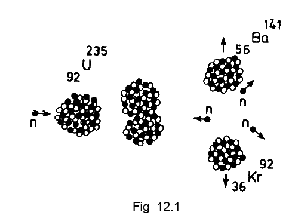
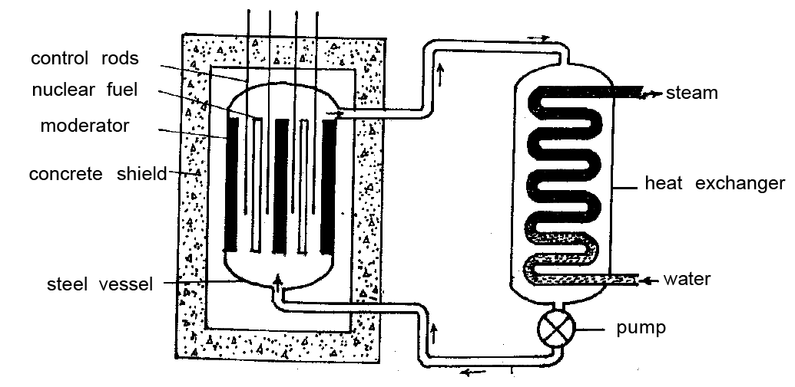

Some isotopes are radioactive while others are not. Those which are not radioactive are stable while those which are radioactive are unstable.
Any reaction that invloves a change in the nucleus of an atom is called a nuclear reaction. The energy released during a nuclear reaction is called nuclear energy. This is sometimes called atomic energy.
During a nuclear reaction, the sum of the masses of the product (or resultant) particles is lesser than the sum of the reactant particles. This difference in mass is converted into energy. The conversion that takes place can be explained by Einstein’s mass-energy principle.
According to Einstein, mass and energy are interconvertible. The total of mass and energy is conserved. This is known as Einstein’s mass-energy principle. If a mass Δ M (The symbol Δ is used to indicate small quantity) is completely converted into energy Δ E, then ΔE =Δ Mc2, where c = velocity of light. For example, if Δ M = 1 mg = 10-6 kg then Δ E = 10-6 (3 x 108)2 = 9 x 1010 J. This is the basis on which energy is released in a nuclear reaction.
Uranium-235 is highly unstable. When a neutron collides with a U-235 nucleus, the nucleus breaks up or gets fissioned into two smaller nuclei of comparable masses along with the liberation of a large amount of energy (Fig. 12.1). The product nuclei of fission reaction are called fission fragments.
The reaction in which a heavy nucleus splits up into two medium nuclei with the liberation of enormous amount of energy, is called nuclear fission.
During each fission of U-235, 2
or 3 neutrons are released. These
neutrons may cause further fission.
The reactions continue further and
further in the form of a chain with a
multiplying effect. Such a self
sustained reaction is called a chain
reaction (Fig. 12.2).
In a chain reaction if fission
neutrons are built upto a certain level
and thereafter the number of fission
producing neutrons, is kept constant,
then it is called controlled chain
reaction. In this case, energy is generated at a definite rate. Controlled chain
reaction is the principle of a nuclear reactor.
Critical size : If the size of the fissionable material is smaller than a certain minimum,
fission neutrons escape through its surface and the chain reaction is not possible. At
a particular size called critical size, fission neutrons are retained to continue the
chain reaction. The minimum size of a fissionable material required to sustain
fission chain reaction, is called critical size.
A nuclear reactor is a device which controls the nuclear fission chain reaction to harness nuclear energy for peaceful purposes. A nuclear reactor which is used to generate electricity, is called a nuclear power plant.
Nuclear power plant : In a nuclear power plant, the energy released by fission is used to produce superheated steam. This turns a turbine which in twin operates an electric generator. A nuclear power plant has the following components. (a) The fissionable material or nuclear fuel (b) the moderator (c) the control rods (d) the preasure vessel (steel vessel) (e) a cooling system with pump and (f) a heat exchanger.
In a nuclear power plant nuclear fuel in the form of pellets are enclosed
in several tubular claddings of steel or aluminium. This is called fuel assembly.
Enriched U-235 or Pu-239 is the fuel material. The fast neutrons released during
fission are slowed down by a moderator, usually graphite surrounding the fuel
assembly. A coolant is circulated through the reactor to remove the heat
generated. Ordinary water is most commonly used. Other coolants such as
heavy water, liquid sodium, molten salts and hydro carbon liquids are also used.
Rods made of boron or cadmium which
are neutron absorbers are used as control
rods.
The neutrons available for fission are
controlled by moving the control rods in and
out of the nuclear core. The rods can be
used to shut down the reactor. Functioning
of the reactor is constantly monitored with
the help of suitable instruments.
Heat produced during fission process is taken by the coolant and is used
to convert water into steam in the heat exchanger. The steam is used to generate
electricity.
The entire reactor is enclosed in a concrete
building with lead sheets covered inside to prevent
radioactive radiation being released into the
environment.
Nuclear fusion in a sense is the reverse process of fission. Nuclear Fusion
is a nuclear reaction in which two or more light nuclei combine to form a heavier
nucleus releasing enormous amount of energy.
Fusion of nuclei requires very high energy to overcome the strong forces
of repulsion between them. This is achieved by providing the participating nuclei
with high kinetic energy or by providing very high temperature conditions. Once
the fusion reaction is triggered, energy released is sufficient to maintain the
temperature and keep the reaction going.
Examples : Deuterium (1H2) is an isotope of hydrogen. Two nuclei of deuterium
fuse to form another isotope of hydrogen called tritium (1H3) along with a proton.
Note this
! Enrichment means increasing the
abundance
! Heavy water - chemical name is
deuterium oxide.
! In modern fast reactors there is no
need for moderator.
1H2 + 1H2 → 1H3 + 1H1 + energy
A deuterium nucleus combines with a tritium nucleus to form a helium
nucleus with the release of a neutron and energy.
1H2 + 1H3 → 2He4 + 0n1 + energy
Energy produced per unit mass in nuclear fusion is higher than that of
nuclear fission reaction.
The nuclear fusion of 1g of hydrogen gives about 6.0 x 1011 J of energy.
This is equal to the energy produced by the combustion of about 350 million
tons of coal.
Scientists have not yet succeeded in creating conditions for the controlled fusion reactions
of hydrogen and get energy for peaceful purposes like the generation of electricity. It
is likely to become a reality in the future.
Uncontrolled fusion reaction of hydrogen nuclei is the principle of hydrongen bomb. High
temperature required for the purpose is produced using fission bomb.
Fusion reactions that take place at very high temperatures are called
thermonuclear fusion reactions. Solar energy in particular and energy of stars
in general, is due to thermonuclear fusion reactions.